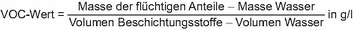

- 1.
Einzelmessungen für nicht genehmigungsbedürftige Anlagen
- 1.1
Bei jedem Überwachungsvorgang sind drei Einzelmessungen mit jeweils einer Dauer von einer Stunde im bestimmungsgemäßen Betrieb durchzuführen. Die Anforderungen gelten als eingehalten, wenn der Mittelwert jeder Einzelmessung den festgelegten Emissionsgrenzwert nicht überschreitet.
- 1.2
Der Bericht über das Ergebnis der Messungen muss insbesondere Angaben über die Messplanung, die verwendeten Messverfahren und die Betriebsbedingungen, die für die Beurteilung der Messergebnisse von Bedeutung sind, enthalten.
- 2.
Kontinuierliche Überwachung für nicht genehmigungsbedürftige Anlagen
- 2.1
Der Betreiber hat durch eine von der zuständigen Behörde bekannt gegebene Stelle den ordnungsgemäßen Einbau der Messeinrichtung und deren Kalibrierung vor Inbetriebnahme feststellen zu lassen. Spätestens nach Ablauf eines Jahres hat der Betreiber die Messeinrichtung auf ihre Funktionsfähigkeit prüfen zu lassen und die Kalibrierung spätestens fünf Jahre nach der letzten Kalibrierung oder nach wesentlicher Änderung der Anlage wiederholen zu lassen. Die Unterlagen über den ordnungsgemäßen Einbau, die Kalibrierung und die Prüfung der Funktionsfähigkeit sind am Betriebsort drei Jahre lang aufzubewahren und der zuständigen Behörde jeweils auf Verlangen vorzulegen.
- 2.2
Der Emissionsgrenzwert gilt als eingehalten, wenn
- a)
kein Tagesmittelwert, gebildet aus den Stundenmittelwerten, die Emissionsgrenzwerte überschreitet,
- b)
keiner der Stundenmittelwerte mehr als das 1,5fache der Emissionsgrenzwerte beträgt.
- 3.
Ermittlung der flächenbezogenen Gesamtemissionen an flüchtigen organischen Verbindungen bei Anlagen der Fahrzeugbeschichtung
Die Fläche eines zu beschichtenden Produkts wird definiert als
- a)
die Fläche, die sich aus der gesamten mit Hilfe der Elektrophorese beschichteten Fläche errechnet, sowie die Fläche der Teile, die in aufeinander folgenden Phasen des Beschichtungsverfahrens hinzukommen und auf die gleiche Schicht wie auf das betreffende Produkt aufgebracht wird, oder als
- b)
die Gesamtfläche des in der Anlage beschichteten Produkts.
Die mit Hilfe der Elektrophorese beschichtete Fläche ist wie folgt zu berechnen:
Diese Berechnung findet auch auf andere beschichtete Blechteile Anwendung. Die Fläche der hinzukommenden Teile oder die in der Anlage beschichtete Gesamtfläche ist mit Hilfe von Computer Aided Design oder anderen gleichwertigen Verfahren zu berechnen.
- 4.
Bestimmung des Gehaltes an flüchtigen organischen Verbindungen im Beschichtungsstoff (VOC-Wert)
- 4.1
Der Gehalt an flüchtigen organischen Verbindungen (VOC-Wert) im Beschichtungsstoff ist gleich der Masse der flüchtigen Anteile abzüglich der Masse des Wassers, ins Verhältnis gesetzt zum Volumen des Beschichtungsstoffes abzüglich des Volumens des darin enthaltenen Wassers in g/l:

Der VOC-Wert bezieht sich auf den anwendungsfertigen Beschichtungsstoff einschließlich der vom Hersteller vorgegebenen oder empfohlenen Verdünnungen.
- 4.2
Abweichend von Nummer 4.1 wird der Gehalt an flüchtigen organischen Verbindungen bei Beschichtungsstoffen für Holzoberflächen als Masse, bezogen auf einen Liter Beschichtungsstoff, wie folgt definiert:
VOC-Wert (g/l) = (100 – nfa – mw) x ps x 10
Es bedeuten:
| ps: | Dichte des Beschichtungsstoffs in g/l |
| nfa: | nichtflüchtige Anteile als Massenprozent |
| mw: | Massenanteil des Wassers in Prozent. |